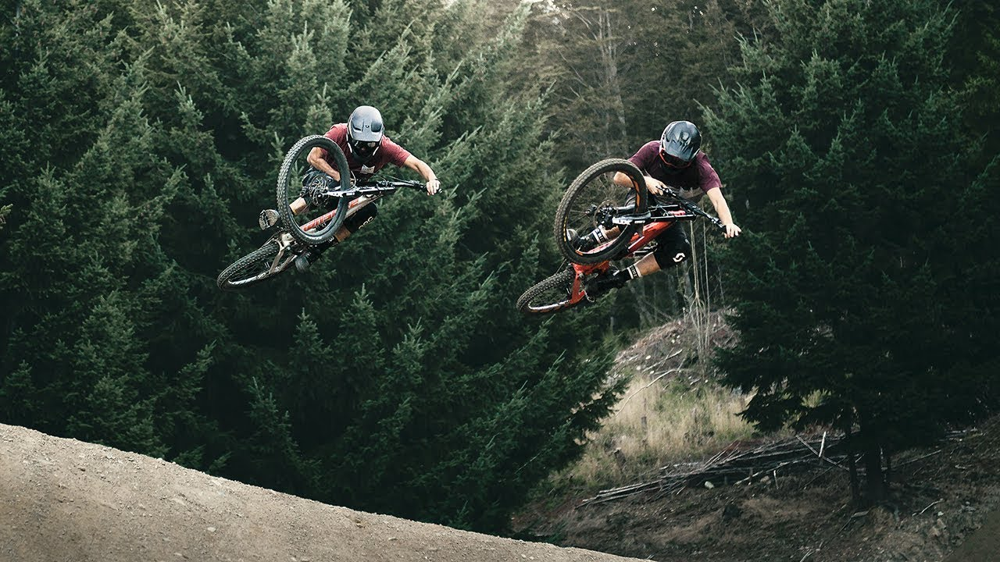

Freeride is a discipline of mountain biking closely related to downhill biking, dirt jumping, and freestyle BMX. When riding a freerider focuses on tricks, style, and technical trail features.
Freeride is now recognized as one of the most popular disciplines within mountain biking. The term freeriding was originally coined by snowboarders, meaning riding without a set course, goals or rules on natural terrain. In mountain biking, it is riding trail with the most creative line possible that includes style, amplitude, control, and speed. Many in the cycling industry suggest that the Laguna Rads were the first to freeride, that is riding terrain that didn't already have an existing path or network of trails.
Heard enough about Freeriding? Return the the Home Page.
The frame is made usually of aluminium alloys and/or steel, and usually smaller build compared to a downhill bike. It is also equipped with rear suspension systems, and many manufacturers still rely on simpler systems i.e. single-pivot) in order to preserve strength and uninterrupted suspension travel.
Single crown forks are now more popular. Companies such as Fox, Answer Products (Manitou), Marzocchi and RockShox, introduced them with very similar strength to their dual crown counterparts, with the immense advantage of being a single crown.
Freeride mountain bikes are often geared differently to downhill or other mountain bikes. There are three main types of freeride mountain bike gearings, these are single speed, short range and long range. Single speed mountain bikes use a single chainring at the front, mounted to the cranks, and a single sprocket at the rear, normally mounted to a freewheel or a freehub.